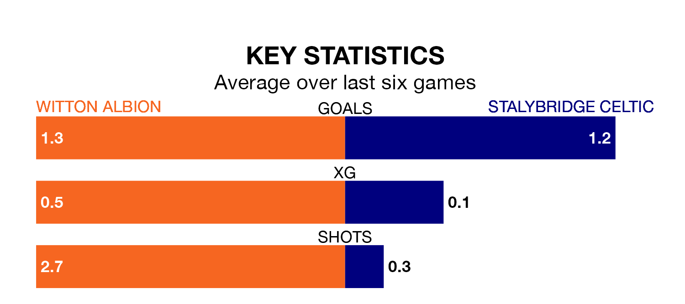

Witton Albion host Stalybridge Celtic on Saturday at the Help For Heroes Stadium in Northern Premier League Division One West.
In their last league match, on January 27, Witton beat Kidsgrove Athletic 3-1 at home.
Stalybridge Celtic drew, 1-1 away at Trafford.
With 38 goals in 25 games so far this season, Stalybridge Celtic are scoring more than average in the league with 1.5 goals per game. And they are conceding fewer than average, letting in 31 goals at a rate of 1.2 per game.
Witton are also above average scorers, with 1.5 goals per game, compared to a league average of 1.4. They have conceded 1.8 goals per game.
In the last 10 years, Witton and Stalybridge Celtic have played each other on 10 occasions. Witton won three of them, Stalybridge Celtic five, and they drew twice.
On average, Witton scored 1.6 goals and Stalybridge Celtic 1.6 in those matches.
Their last meeting was on September 16, when Stalybridge Celtic won 4-0 at home.
The visitors are fourth in the table after 25 games, of which they have won 10 and drawn nine, earning 39 points.
Albion are two places behind Stalybridge Celtic in sixth, with 11 wins and five draws putting them on 38 points.
The home side are in good form in Northern Premier League Division One West, with four wins and a draw from their last six games.
With two wins and three draws over that period, Stalybridge Celtic's form is worse – they have taken nine points from 18, compared to Witton's 13.
Updated: 13:20 (UTC), 29/01/24